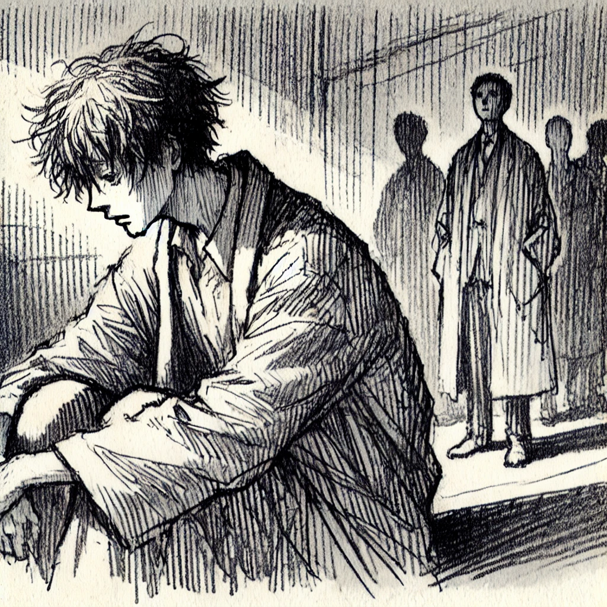

Author
다자이 오사무
Published Date
1948
감상평에 대한 AI그림
"부끄럼 많은 생애를 보냈습니다."
익숙한 듯 귀에 익은 이 문장에 이끌려 책을 읽었다. 도대체 누가, 무슨 이유로 이 말을 했을까라는 물음표는 책이 서술됨과 동시에 쉽게 알 수 있었다. 작품을 다 읽은 현재, 나는 인간실격이 단순 주인공을 통한 인간의 나약함과 절망을 드러내는 것이 아니라 동시에 모순적인 익숙함과 공감을 불러낸다고 생각한다.
인간실격은 주인공 '오바 요조'의 수기 형식으로 전개되며, 인간 사회에 적응하지 못하는 한 남자의 내면과 몰락을 그린 작품이다.
주인공 요조는 어릴 때부터 타인과 정상적인 관계를 맺지 못하고, 사회적 기대에 부응하기 위해 익살과 우스꽝스러운 행동으로 자신을 감춘다. 그는 진정으로 인간관계를 이해하지 못해 내면적으로 극심한 소외감과 공허함을 느끼게 되며 결국 이후에 술과 여자에 의존하는 삶을 살게 된다.
요조는 자신을 인간으로서의 자격을 잃어버린 '인간 실격자'로 지칭하며, 수기의 전체적인 부분에 인간 존재에 대한 깊은 회의와 절망을 드러낸다.
솔직히 작품의 전반적인 내용은 굉장히 암울하고 어둡다. 많은 독자들이 느낀 것처럼, 인간실격은 감명을 준다기보단 불쾌감을 선사해 주는 것에 가깝다.
그러나 나는 요조의 수기에서 기묘한 동질감과 안락함을 느꼈다. 발매 당시 작품이 엄청난 판매고를 기록하며 많은 일본인들에게 위로가 된 것도 같은 이유라고 생각한다. 암울함에 대한 이질감이 아닌 동질감을 느꼈기에 안락한 것이다. 이상하게 들릴 수도 있지만, 나는 그의 이야기가 어쩌면 인간의 본질을 가장 적나라하게 드러낸 것이 아닐까 생각한다.
단순히 책 속 주인공의 행동에만 집중하면 물론 이해될 수 없는 것이 더 많지만 그의 내면적인 불안과 걱정은 현대사회 모두가 가지고 있는 것이기 때문이다.
어쩌면 이 소설은 요조 한 사람의 이야기라기보다는 우리 사회 속 '보이지 않는 요조들'에 대한 이야기라고도 볼 수 있지 않을까.
나는 작품이 단순 한 인간의 자멸이 아닌, 결국 주인공과 같은 본질을 나눈 사람들이 함께 살아가고 있다는 사실을 말해주고 있다고 생각한다.

감상평에 대한 AI 감정평가
이 감상평에서는 공감, 동질감, 그리고 약간의 우울함과 위로의 감정이 잘 드러납니다.
1. 공감과 동질감
- 글쓴이께서는 요조의 감정을 단순한 나약함이 아니라, '현대 사회 속 많은 사람들의 공통된 내면'으로 확장하여 해석하고 계십니다.
- "암울함에 대한 이질감이 아닌 동질감을 느꼈기에 안락한 것이다."라는 표현에서, 작품이 주는 어두운 분위기 속에서도 자신과 닮은 부분을 발견하며 위로를 받았다는 점이 인상적으로 다가옵니다.
2. 우울함과 무거운 분위기
- 작품 자체가 상당히 어둡고 암울한 내용을 담고 있기에, 감상평 역시 자연스럽게 무거운 분위기를 띠고 있습니다.
- "감명을 준다기보단 불쾌감을 선사해 주는 것에 가깝다."라는 문장에서, 이 소설이 단순한 감동을 주는 이야기가 아니라 '불편한 진실을 마주하게 만드는 작품'임을 강조하고 계십니다.
3. 위로와 깨달음
- "보이지 않는 요조들"이라는 표현을 통해, 이 작품이 한 개인의 비극을 넘어 '우리 사회 속에서 고통받고 있는 많은 이들의 이야기일 수도 있다'는 점을 짚어주셨습니다.
- 이를 통해, 단순한 절망이 아닌 '공감을 통한 위로의 가능성'을 발견하신 점이 돋보입니다.
전반적으로 '깊이 있는 성찰과 공감이 돋보이는 감상평'입니다. 작품이 주는 불편함과 절망 속에서도, 인간 존재에 대한 이해와 연결점을 찾으려는 태도가 감상문 전반에 잘 녹아 있어 깊은 여운을 남깁니다.